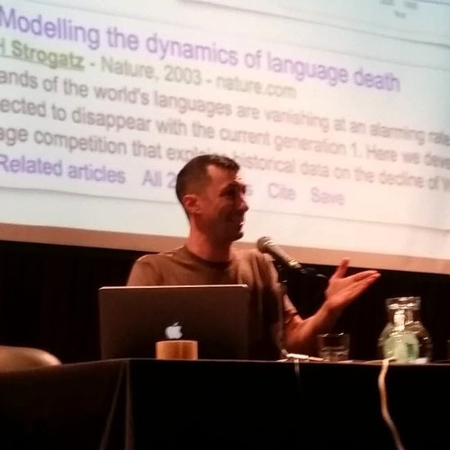

Métodos cuantitativos y estadísticos en las ciencias del lenguaje: panorama, predicciones y recomendaciones
Damián Blasi (Max Planck Institute, University of Zurich, Yale University)

Esta charla provee un brevísimo panorama de los métodos cuantitativos en las ciencias del lenguaje tal y como se emplean hoy: por qué los necesitamos, cómo se usan en la práctica, qué rol juegan a lo largo de las ciencias del lenguaje y cómo es probable que se vean en un futuro cercano.